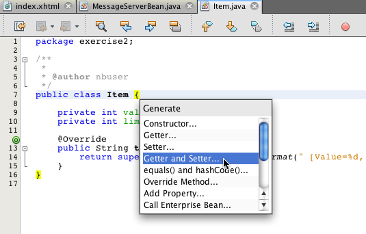
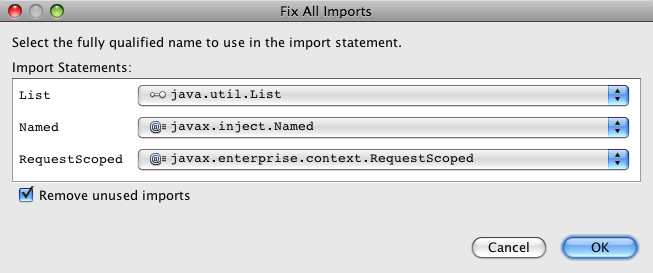

Apache NetBeans
Apache NetBeansLatest release
Trabalhando com Injeção e Qualificadores no CDI
| This tutorial needs a review. You can open a JIRA issue, or edit it in GitHub following these contribution guidelines. |
Contribuição de Andy Gibson
Injeção de Dependência e Contextos
-
Trabalhando com Injeção e Qualificadores no CDI
A Injeção de Dependência e Contextos (CDI), especificada por JSR-299, é parte integrante do Java EE 6 e fornece uma arquitetura que permite aos componentes do Java EE, como os servlets, enterprise beans e JavaBeans, existirem dentro do ciclo de vida de uma aplicação com escopos bem definidos. Além disso, os serviços CDI permitem que os componentes do Java EE, como beans de sessão EJB e beans gerenciados do JavaServer Faces (JSF), sejam injetados e interajam de maneira acoplada flexível, disparando e observando eventos.
Este tutorial tem base no post do blog de Andy Gibson, intitulado Introdução ao CDI parte 2: Injeção. Ele demonstra como é possível utilizar a injeção de CDI para injetar classes ou interfaces em outras classes. Também mostra como aplicar _qualificadores _ CDI ao código, de modo que seja possível especificar qual tipo de classe deverá ser injetada em um determinado ponto de injeção.
O NetBeans IDE fornece um suporte incorporado para a Injeção de Dependência e Contextos, incluindo a opção de geração do arquivo de configuração de CDI beans.xml durante a criação do projeto, do editor e do suporte de navegação para anotações, assim como vários assistentes para a criação de artefatos CDI comumente utilizados.
Para concluir este tutorial, você precisa dos seguintes recursos e softwares.
| Software ou Recurso | Versão Necessária |
|---|---|
Versão Java EE 7.2, 7.3, 7.4, 8.0 |
|
versão 7 ou 8 |
|
Open Source Edition 3.x ou 4.x |
|
n/d |
Observações:
-
O pacote Java EE do NetBeans inclui também o GlassFish Server Open Source Edition, que é um contêiner compatível com Java EE.
-
Pode ser feito o download do projeto de amostra de solução para esse tutorial: cdiDemo2.zip
Injeção: o "I" do CDI
O CDI é uma API para injeção de dependências e contextos. Em Seam e Spring, as dependências funcionam, principalmente, nomeando beans e os vinculando aos seus pontos de injeção pelos nomes. Se estiver seguindo este tutorial depois de ter concluído Introdução a Injeção de Dependência e Contextos e JSF 2.0, você terá, até agora, feito referência apenas a um bean gerenciado por nome, da página do JSF, quando definimos o nome para o bean utilizando a anotação @Named. A atribuição principal da anotação @Named é definir o bean com o objetivo de resolver instruções EL na aplicação, normalmente por meio dos resolvedores JSF EL. A injeção poderia ser executada com o uso de nomes, mas não era assim que a injeção no CDI deveria funcionar, já que o CDI nos proporciona uma maneira muito mais rica de expressar pontos de injeção e os beans a serem injetados neles.
No exemplo a seguir, você cria um ItemProcessor que pega uma lista de itens de uma classe que implementa a interface do ItemDao. Aproveite a anotação @Inject do CDI para demonstrar como é possível injetar um bean em outra classe. O diagrama a seguir retrata o cenário construído neste exercício.

Figure 1. Use a injeção de CDI para acoplar, livremente, as classes na sua aplicação
DAO significa data access object.
-
Comece extraindo o projeto de início da amostra do arquivo
cdiDemo.zip(Consulte a tabela que lista os recursos necessários acima.) Abra o projeto no IDE escolhendo Arquivo > Abrir Projeto (Ctrl-Shift-O; ⌘-Shift-O no Mac) e, em seguida, selecionando o projeto no seu local no computador. -
Clique com o botão direito do mouse no nó do projeto na janela Projetos e escolha Propriedades.
-
Selecione a categoria Executar e confirme se a instância do GlassFish está selecionada na lista drop-down Servidor.
-
Crie uma nova classe
Iteme armazene-a em um novo pacote nomeadoexercise2. Clique no botão Novo Arquivo ( ) ou pressione CTRL-N (⌘-N no Mac) para abrir o assistente de Arquivo.
) ou pressione CTRL-N (⌘-N no Mac) para abrir o assistente de Arquivo. -
Selecione a categoria Java e, em seguida, a Classe Java. Clique em Próximo.
-
Informe Item como o nome da classe e, em seguida, exercise2 como o pacote. (O novo pacote é criado após a conclusão do assistente.)

Figure 2. Criar uma nova classe Java usando o assistente de Arquivo
-
Clique em Finalizar. A nova classe e o novo pacote são gerados e a classe
itemé aberta no editor. -
Crie as propriedades
valueelimitpara o POJO doIteme implemente o métodotoString(). Adicione o conteúdo a seguir à classe.
public class Item {
*private int value;
private int limit;
@Override
public String toString() {
return super.toString() + String.format(" [Value=%d, Limit=%d]", value,limit);
}*
}-
Adicione os métodos getter e setter à classe. Para isso, garanta que o cursor esteja colocado entre a definição de classe (ou seja, entre as chaves da classe) e, em seguida, clique com o botão direito do mouse no editor e escolha Inserir Código (Alt-Insert; Ctrl-I no Mac). Escolha Getter e Setter.

Figure 3. Criar getters e setters usando o pop-up Inserir Código
-
Marque a caixa de seleção
Item(fazer isso seleciona todas as propriedades contidas na classe).

Figure 4. Marque a caixa de seleção da classe para selecionar todas as propriedades contidos na classe
-
Clique em Gerar. Os métodos getter e setter são gerados para a classe.
public class Item {
private int value;
private int limit;
*public int getLimit() {
return limit;
}
public void setLimit(int limit) {
this.limit = limit;
}
public int getValue() {
return value;
}
public void setValue(int value) {
this.value = value;
}*
@Override
public String toString() {
return super.toString() + String.format(" [Value=%d, Limit=%d]", value, limit);
}
}-
Crie um construtor que utilize os argumentos
valueelimit. Novamente, o IDE pode ajudar com isso. Pressione Ctrl-Espaço na definição da classe e escolha a opção “Item(int value, int limit) - generate”.

Figure 5. Pressione Ctrl-Espaço para utilizar os recursos de autocompletar código do editor
O construtor a seguir é adicionado à classe.
public class Item {
*public Item(int value, int limit) {
this.value = value;
this.limit = limit;
}*
private int value;
private int limit;
...-
Crie uma interface
ItemDaopara definir como obtemos a lista de objetosItem. Nesta aplicação de teste, antecipamos o uso de várias implementações, portanto, codificaremos para interfaces.
Clique no botão Novo Arquivo () ou pressione CTRL-N (⌘-N no Mac) para abrir o assistente de Arquivo.
-
Selecione a categoria Java e, em seguida, selecione Interface Java. Clique em Próximo.
-
Digite ItemDao como o nome da classe e, em seguida, insira exercise2 como o pacote.
-
Clique em Finalizar. A nova interface será gerada e aberta no editor.
-
Adicione um método chamado
fetchItems()que retorna umaListade objetosItem.
public interface ItemDao {
*List<Item> fetchItems();*
}(Utilize a dica do editor para adicionar a instrução de importação de java.util.List.)
-
Crie uma classe
ItemProcessor. É a classe principal em que você injetará seus beans e da qual executará o processo. Por enquanto, iniciaremos com a DAO e examinaremos como será feita a sua injeção no nosso bean processador.
Clique no botão Novo Arquivo () ou pressione CTRL-N (⌘-N no Mac) para abrir o assistente de Arquivo.
-
Selecione a categoria Java e, em seguida, a Classe Java. Clique em Próximo.
-
Digite ItemProcessor como o nome da classe e, em seguida, exercise2 como o pacote. Clique em Finalizar.
A nova classe é gerada e aberta no editor.
-
Modifique a classe como se segue:
@Named
@RequestScoped
public class ItemProcessor {
private ItemDao itemDao;
public void execute() {
List<Item> items = itemDao.fetchItems();
for (Item item : items) {
System.out.println("Found item " + item);
}
}
}-
Corrigir importações. Clique com o botão direito do mouse no editor e selecione Corrigir Importações ou pressione Ctrl-Shift-I (⌘-Shift-I no Mac).

Figure 6. Clique com o botão direito do mouse no editor e escolha Corrigir Importações para adicionar instruções de importação à classe
-
Clique em OK. Instruções de importação para as classes a seguir são necessárias:
-
java.util.List -
javax.inject.Named -
javax.enterprise.context.RequestScoped
-
-
Comece com um DAO simples que apenas cria uma lista de itens e retorna uma lista fixa de itens.
Na janela Projetos, clique com o botão direito do mouse no nó de pacote exercise2 e escolha Novo > Classe Java. No assistente de Classe Java, nomeie a classe DefaultItemDao. Clique em Finalizar.

Figure 7. Criar uma nova classe Java usando o assistente de Classe Java
-
No editor, faça com que
DefaultItemDaoimplemente a interfaceItemDaoe forneça uma implementação defetchItems().
public class DefaultItemDao *implements ItemDao* {
*@Override
public List<Item> fetchItems() {
List<Item> results = new ArrayList<Item>();
results.add(new Item(34, 7));
results.add(new Item(4, 37));
results.add(new Item(24, 19));
results.add(new Item(89, 32));
return results;
}*
}(Pressione Ctrl-Shift-I (⌘-Shift-I no Mac) para adicionar instruções de importação para java.util.List e java.util.ArrayList.)
-
Mude para a classe
ItemProcessor(pressione Ctrl-Tab). Para injetar oDefaultItemDaonoItemProcessor, adicionamos a anotaçãojavax.inject.Injectao campoItemDaopara indicar que esse campo é um ponto de injeção.
*import javax.inject.Inject;*
...
@Named
@RequestScoped
public class ItemProcessor {
*@Inject*
private ItemDao itemDao;
...
}
Utilize o suporte à funcionalidade autocompletar código do editor para adicionar a anotação @Inject e a instrução de importação à classe. Por exemplo, digite “@Inj” e, em seguida, pressione Ctrl-Espaço.#
|
-
Finalmente, precisamos de alguma maneira para chamar o método
execute()noItemProcessor. Podemos executá-lo em um ambiente SE, mas, no momento, o manteremos em uma página JSF. Crie uma nova página chamadaprocess.xhtmlque contém um botão para chamar o métodoexecute().
Clique no botão Novo Arquivo () ou pressione CTRL-N (⌘-N no Mac) para abrir o assistente de Arquivo.
-
Selecione a categoria JavaServer Faces e selecione a Página JSF. Clique em Próximo.
-
Digite processo como o nome do arquivo e clique em Finalizar.

Figure 8. Criar uma nova página Facelets usando o assistente de arquivo JSF
-
No novo arquivo
process.xhtml, adicione um botão que esteja conectado ao métodoItemProcessor.execute(). Utilizando EL, o nome default para o bean gerenciado é o mesmo que o nome da classe, mas com a primeira letra minúscula (por exemplo.,itemProcessor).
<h:body>
*<h:form>
<h:commandButton action="#{itemProcessor.execute}" value="Execute"/>
</h:form>*
</h:body>-
Antes de executar o projeto, defina o arquivo
process.xhtmlcomo a nova página de boas-vindas no descritor de implantação web do projeto.
Utilize a caixa de diálogo Ir para Arquivo do IDE para abrir rapidamente o arquivo web.xml. Escolha Navegar > Ir para Arquivo no menu principal do IDE (Alt-Shift-O; Ctrl-Shift-O no Mac) e, em seguida, digite “web”.

Figure 9. Use a caixa de diálogo Ir para Arquivo para localizar rapidamente um arquivo de projeto
-
Clique em OK. Na view XML do arquivo
web.xml, faça a alteração a seguir.
<welcome-file-list>
<welcome-file>faces/*process.xhtml*</welcome-file>
</welcome-file-list>-
Clique no botão Executar Projeto (
 ) na barra de ferramentas principal do IDE. O projeto é compilado e implantado no GlassFish e o arquivo
) na barra de ferramentas principal do IDE. O projeto é compilado e implantado no GlassFish e o arquivo process.xhtmlserá aberto no browser. -
Clique no botão “Execute” que é exibido na página. Volte ao IDE e examine o log do GlassFish Server. O log do servidor é exibido na janela Saída (Ctrl-4; ⌘-4 no Mac) na guia GlassFish Server. Quando o botão é clicado, o log lista os itens da nossa implementação de DAO default.

Figure 10. Examine o log do servidor na janela Saída do IDE
| Clique com o botão direito do mouse na janela Saída e escolha Limpar (Ctrl-L; ⌘-L no Mac) para limpar o log. Na imagem acima, o log foi limpo pouco antes de clicar no botão “Execute”.# |
Criamos uma classe que implementa a interface ItemDao e quando a aplicação foi implantada, nossos beans gerenciados no módulo foram processados pela implementação do CDI (por causa do arquivo beans.xml no módulo). Nossa anotação @Inject especifica que queremos injetar um bean gerenciado nesse campo e a única coisa que sabemos sobre o bean injetável é que ele deve implementar ItemDao ou algum subtipo dessa interface. Nesse caso, a classe DefaultItemDao se adapta perfeitamente.
O que aconteceria se houvesse várias implementações de ItemDao que pudessem ter sido injetadas? O CDI não saberia qual implementação escolher e sinalizaria um erro de tempo de implantação. Para superar isso, seria necessário utilizar um qualificador CDI. Qualificadores são explorados na próxima seção.
Trabalhando com Qualificadores
Um qualificador CDI é uma anotação que pode ser aplicada no nível da classe para indicar o tipo de bean que a classe é e, no nível do campo (entre outros lugares), para indicar que tipo de bean precisa ser injetado nesse ponto.
Para demonstrar a necessidade de um qualificador na aplicação que estamos construindo, vamos adicionar outra classe DAO à nossa aplicação, que também implementa a interface ItemDao. O diagrama a seguir retrata o cenário que você está construindo neste exercício. O CDI deve conseguir determinar qual implementação de bean deverá ser utilizada em um ponto de injeção. Como há duas implementações de ItemDao, podemos resolver isso criando um qualificador chamado Demo. Em seguida, "marcamos" o bean que queremos utilizar e o ponto de injeção em ItemProcessor com uma anotação @Demo.

Figure 11. Use a injeção e os qualificadores de CDI para acoplar, livremente, as classes na sua aplicação
Execute as seguintes etapas.
-
Na janela Projetos, clique com o botão direito do mouse no pacote
exercise2e escolha Novo > Classe Java. -
No assistente Nova Classe Java, nomeie a nova classe AnotherItemDao e clique em Finalizar. A nova classe é gerada e aberta no editor.
-
Modifique a classe como se segue, de modo que ela implemente a interface
ItemDaoe defina o métodofetchItems()da interface.
public class AnotherItemDao *implements ItemDao* {
*@Override
public List<Item> fetchItems() {
List<Item> results = new ArrayList<Item>();
results.add(new Item(99, 9));
return results;
}*
}Certifique-se de adicionar instruções de importação para java.util.List e java.util.ArrayList. Para isso, clique com o botão direito do mouse no editor e escolha Corrigir Importações ou pressione Ctrl-Shift-I (⌘-Shift-I no Mac).
Agora que há duas classes que implementam o ItemDao, a escolha não está tão clara com relação a em qual bean queremos injetar.
-
Clique no botão Executar Projeto (
) para executar o projeto. Observe que o projeto agora falha na implantação.
Provavelmente, você só precisa salvar o arquivo porque o IDE implantará o projeto automaticamente, visto que a opção Implantar ao Salvar está ativada por default.
-
Examine o log do servidor na janela Saída (Ctrl-4; ⌘-4 no Mac). Será exibida uma mensagem de erro semelhante ao seguinte.
Caused by: org.jboss.weld.DeploymentException: Injection point has ambiguous dependencies.
Injection point: field exercise2.ItemProcessor.itemDao;
Qualifiers: [@javax.enterprise.inject.Default()];
Possible dependencies: [exercise2.DefaultItemDao, exercise2.AnotherItemDao]Para quebrar o texto em várias linhas na janela Saída, clique com o botão direito do mouse e escolha Quebrar texto. Isso elimina a necessidade de rolar horizontalmente.
Weld, a implementação para CDI, nos proporciona um erro de dependência ambígua, o que significa que não pode determinar qual bean utilizar para o ponto de injeção determinado. A maioria dos erros, se não todos, que podem ocorrer com relação à injeção CDI em Weld são informados no momento da implantação, até mesmo se os beans ativados para passivação estiverem sem uma implementação Serializable.
Poderíamos tornar nosso campo itemDao no ItemProcessor um tipo específico que corresponde a um dos tipos de implementação (AnotherItemDao ou DefaultItemDao), já que corresponderia, em seguida, a um e apenas um tipo de classe. No entanto, perderíamos os benefícios da codificação para uma interface e seria mais difícil alterar as implementações sem alterar o tipo de campo. Uma solução melhor seria, portanto, examinarmos os qualificadores de CDI.
Quando o CDI inspeciona um ponto de injeção para encontrar um bean adequado para injetar, não leva em conta apenas o tipo de classe, mas também todos os qualificadores. Sem saber disso, já utilizamos um qualificador que é o qualificador default chamado @Any. Vamos criar um qualificador @Demo que podemos aplicar à nossa implementação de DefaultItemDao e também ao ponto de injeção em ItemProcessor.
O IDE fornece um assistente que permite gerar qualificadores CDI.
-
Clique no botão Novo Arquivo (
) ou pressione CTRL-N (⌘-N no Mac) para abrir o assistente de Arquivo. -
Selecione a categoria Injeção de Dependência e Contexto e, em seguida, selecione Tipo de Qualificador. Clique em Próximo.
-
Digite Demo como o nome da classe e, em seguida, exercise2 como o pacote.
-
Clique em Finalizar. O novo qualificador
Demoserá aberto no editor.
package exercise2;
import static java.lang.annotation.ElementType.TYPE;
import static java.lang.annotation.ElementType.FIELD;
import static java.lang.annotation.ElementType.PARAMETER;
import static java.lang.annotation.ElementType.METHOD;
import static java.lang.annotation.RetentionPolicy.RUNTIME;
import java.lang.annotation.Retention;
import java.lang.annotation.Target;
import javax.inject.Qualifier;
/**
*
* @author nbuser
*/
@Qualifier
@Retention(RUNTIME)
@Target({METHOD, FIELD, PARAMETER, TYPE})
public @interface Demo {
}Em seguida, você adicionará este qualificador à implementação DAO default no nível da classe.
-
Altere para
DefaultItemDaono editor (pressione Ctrl-Tab) e, em seguida, digite “@Demo” acima da definição da classe.
*@Demo*
public class DefaultItemDao implements ItemDao {
@Override
public List<Item> fetchItems() {
List<Item> results = new ArrayList<Item>();
results.add(new Item(34, 7));
results.add(new Item(4, 37));
results.add(new Item(24, 19));
results.add(new Item(89, 32));
return results;
}
}
Depois de digitar “@”, pressione Ctrl-Espaço para chamar sugestões da funcionalidade autocompletar código. O editor reconhece o qualificador Demo e lista @Demo como uma opção para a funcionalidade autocompletar código.#
|
-
Clique no botão Executar Projeto (
) para executar o projeto. O projeto será compilado e implantado sem erros.
Observação. Para esta modificação talvez você precise executar explicitamente o projeto para reimplantar a aplicação, em vez de implantar incrementalmente as alterações.
-
No browser, clique no botão “Execute”, retorne para o IDE e examine o log do servidor na janela Saída. Você verá a seguinte saída.
INFO: Found item exercise2.Item@1ef62a93 [Value=99, Limit=9]A saída lista o item da classe AnotherItemDao. Lembre-se de que anotamos a implementação DefaultItemDao, mas não o ponto de injeção em ItemProcessor. Adicionando o qualificador @Demo à implementação DAO default, tornamos a outra implementação uma correspondência mais adequada para o ponto de injeção, pois houve coincidência no tipo e no qualificador. O DefaultItemDao tem, no momento, o qualificador Demo, que não está no ponto de injeção, o que o torna, portanto, menos adequado.
Em seguida, você adicionará a anotação @Demo ao ponto de injeção em ItemProcessor.
-
Altere para
ItemProcessorno editor (pressione Ctrl-Tab) e, em seguida, faça a seguinte alteração.
@Named
@RequestScoped
public class ItemProcessor {
@Inject *@Demo*
private ItemDao itemDao;
public void execute() {
List<Item> items = itemDao.fetchItems();
for (Item item : items) {
System.out.println("Found item " + item);
}
}
}-
No browser, clique no botão “Execute”, retorne para o IDE e examine o log do servidor na janela Saída. Você verá, novamente, a saída da implementação default (
DefaultItemDao).
INFO: Found item exercise2.Item@7b3640f1 [Value=34, Limit=7]
INFO: Found item exercise2.Item@26e1cd69 [Value=4, Limit=37]
INFO: Found item exercise2.Item@3274bc70 [Value=24, Limit=19]
INFO: Found item exercise2.Item@dff76f1 [Value=89, Limit=32]Isso ocorre porque agora estamos fazendo a correspondência com base em qualificadores do tipo and, e DefaultItemDao é o único bean com o tipo correto e a anotação @Demo.
Métodos de Injeção Alternativos
Há várias maneiras de definir um ponto de injeção na classe injetada. Até agora, anotamos os campos que fazem referência ao objeto injetado. Não é necessário fornecer getters e setters para a injeção de campo. Se quisermos criar beans gerenciados imutáveis com campos finais, poderemos utilizar a injeção no construtor anotando-o com a anotação @Inject. Em seguida, poderemos aplicar quaisquer anotações aos parâmetros do construtor para qualificar os beans para injeção. (Claro, cada parâmetro tem um tipo que pode ajudar na qualificação de beans para injeção). Um bean pode ter apenas um construtor com pontos de injeção definidos, mas pode implementar mais de um construtor.
@Named
@RequestScoped
public class ItemProcessor {
private final ItemDao itemDao;
@Inject
public ItemProcessor(@Demo ItemDao itemDao) {
this.itemDao = itemDao;
}
}Também podemos chamar um método de inicialização que pode ser passado a um bean a ser injetado.
@Named
@RequestScoped
public class ItemProcessor {
private ItemDao itemDao;
@Inject
public void setItemDao(@Demo ItemDao itemDao) {
this.itemDao = itemDao;
}
}Embora no caso acima tenhamos utilizado o método setter para a inicialização, podemos criar qualquer método e utilizá-lo para a inicialização com quantos beans quisermos na chamada do método. Também podemos ter vários métodos de inicialização em um bean.
@Inject
public void initBeans(@Demo ItemDao itemDao, @SomeQualifier SomeType someBean) {
this.itemDao = itemDao;
this.bean = someBean;
}As mesmas regras se aplicam à correspondência de beans, independente de como o ponto de injeção é definido. O CDI tentará encontrar a melhor correspondência, com base no tipo e nos qualificadores, e haverá falha na implantação se houver vários beans correspondentes ou nenhum bean correspondente para um ponto de injeção.
Consulte Também
Vá para o próximo artigo desta série sobre Injeção de Dependência e Contextos:
Para obter mais informações sobre o CDI e o Java EE, consulte os recursos a seguir.